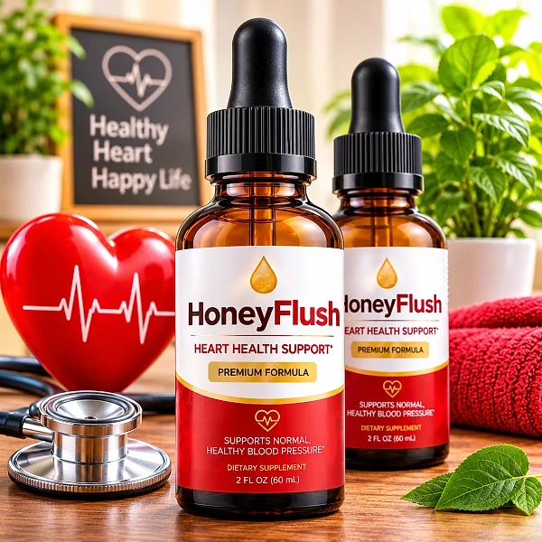
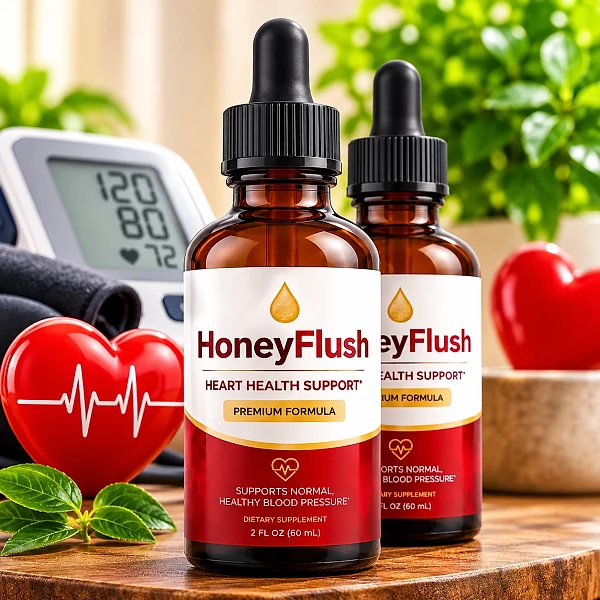

What Is HoneyFlush And How Does It Work?
HoneyFlush is a liquid dietary supplement taken by dropper. The official website describes it as a formula developed for oral use and marketed to support heart health, healthy blood pressure and overall cardiovascular wellness. The red and gold label reads "Heart Health Support" and "Premium Formula", with a golden honey drop above the name.
According to the official website, HoneyFlush combines the mineral chromium with amino acids such as L-Arginine and L-Glutamine and botanical extracts such as Grape Seed, Green Tea, Eleutherococcus and GABA. The sales page highlights six of these ingredients, while the full Supplement Facts panel lists a longer blend.
How does it work? The brand says the formula is meant to support blood vessel function, help maintain blood pressure already in the normal range and offer antioxidant support for circulation. L-Arginine is described as a building block for nitric oxide, grape seed and green tea as sources of antioxidants, and eleuthero and GABA as support for the body’s response to everyday stress.
The routine is simple: shake the bottle, take one or two droppers full a day, place the liquid in the mouth and swallow. The official FAQ recommends taking it in the morning.
The label says HoneyFlush is made in the USA with globally sourced ingredients in an FDA-registered facility, and it is distributed by Instituto Experience from Lakeland, Florida. Orders on the official website are completed through a secure checkout from BuyGoods, an established online retailer.
One detail is worth knowing: despite the honey drop on the label and the name, honey is not listed among the ingredients. The liquid is sweetened with stevia and xylitol.
Like every dietary supplement, HoneyFlush has not been evaluated by the Food and Drug Administration and is not intended to diagnose, treat, cure, or prevent any disease. It does not replace blood pressure medication or medical follow-up, and it is best seen as one part of a routine that includes regular checkups, movement, sleep and balanced meals.
HoneyFlush Ingredients
The current Supplement Facts panel on the official website lists a 1 ml serving of HoneyFlush with these ingredients:
Grape Seed Extract: an antioxidant extract that the website links to the protection of artery walls against oxidative stress.
L-Arginine: an amino acid the body uses to produce nitric oxide, which helps blood vessels relax.
Chromium (as chromium picolinate), 0.7 mcg: an essential trace mineral, listed at 2% of the Daily Value.
Eleutherococcus root and GABA: an adaptogenic botanical and a calming amino acid that the brand associates with the body’s response to stress.
Green Tea leaf: a polyphenol-rich extract that also contains natural caffeine.
Except for chromium, these are part of a 200 mg proprietary blend that also includes Maca, Guarana, African Mango, Astragalus, Gymnema, Coleus forskohlii, Capsicum, Grapefruit, Panax Ginseng, raspberry ketones, L-Glutamine, L-Tyrosine, Beta-Alanine, licorice-derived glycyrrhizinate, L-Ornithine, L-Tryptophan and L-Carnitine. The label does not show the amount of each one.
The other ingredients are glycerin, water, organic lemon extract, stevia, xylitol, sodium benzoate, potassium sorbate, citric acid and natural flavors.
HoneyFlush Side Effects
The official website does not publish a list of side effects for HoneyFlush. It describes the product as made with naturally derived ingredients in an FDA-registered facility, but tolerance to a formula with more than twenty active ingredients can vary from person to person.
The label includes a clear caution. Do not exceed the recommended dose. Pregnant or nursing mothers, children under 18 and people with a known medical condition should consult a physician before using it. Keep it out of the reach of children and do not use it if the safety seal is damaged or missing.
Because HoneyFlush is marketed for blood pressure, this point matters most: if you take medication for blood pressure, the heart or blood sugar, talk to your doctor before starting. Ingredients such as L-Arginine, Coleus forskohlii, Gymnema and Ginseng may add to the effect of these medicines, and guarana and green tea contain caffeine, which can raise blood pressure in sensitive people.
The sweetener xylitol should also be kept away from dogs. Never stop or change a prescribed treatment on your own, and if you notice dizziness, palpitations or any unusual reaction, stop using the product and seek medical advice.
HoneyFlush Dosage
The suggested use on the label is to shake well before each use, take 1 or 2 droppers full daily, place the liquid in your mouth and swallow. The serving size listed on the Supplement Facts panel is 1 ml.
The official FAQ recommends taking HoneyFlush in the morning, so the nutrients and extracts are present throughout the day. Taking it at the same time every day also makes the routine easier to keep.
There is an inconsistency worth knowing about the bottle size. The current label on the official website reads 1 fl oz (30 ml) with 30 servings, while an earlier label on the same website shows 2 fl oz (60 ml) with 60 servings. At one or two droppers a day, a 30 ml bottle lasts between 15 and 30 days, even though the order page describes each bottle as a 30-day supply.
The label asks you to store the bottle away from heat, light and humidity, in a cool, dry place and out of the reach of children.
Do not take more than the label recommends, check the volume printed on the bottle you receive, and if you use blood pressure medication, agree on the dose with your doctor. Results vary from person to person.
HoneyFlush – Refund Policy
HoneyFlush is sold with a 60-day money-back guarantee, counted from the date of purchase, according to the official website.
The detailed refund policy adds conditions that are worth reading before you order. The minimum trial period is 30 days, and you must start the return process within 60 days of your purchase date. Only sealed bottles are eligible for a refund.
The refund does not include shipping or customs fees, the customer pays for return shipping, and a 20% restocking fee is deducted from the total order amount.
How to request it: email the support team at contact@customercs.com to receive a return authorization code before sending anything back. Once the returned items are received and verified, the refund goes to the original payment method and may take 5 to 10 business days to appear on your statement, followed by a confirmation email.
Customer Support Contact Information: contact@customercs.com or +1 (507) 448-8190, the number printed on the label. The FAQ says emails are usually answered within 48 business hours.
Note that the order page and the FAQ describe the guarantee in simpler terms, as unconditional and "no questions asked", while the refund policy adds the 30-day trial, the sealed-bottle rule and the 20% fee. Keep your BuyGoods receipt and confirm the terms with support before ordering.
HoneyFlush Customer Reviews
-
Michael Thompson — Houston, TexasVerified Purchase – 6 Bottles
“Just two weeks into taking HoneyFlush, I began to see my blood pressure stabilize and my energy levels soar. Managing my circulation has never been this easy and straightforward!”
-
George Rodriguez — Chicago, IllinoisVerified Purchase – 6 Bottles
“I was totally discouraged about my blood pressure, dealing with constant spikes and feeling tired all the time. But then I started on HoneyFlush, and day by day, my blood pressure became more balanced... And I swear, it felt like I regained control of my health in just 3 weeks!”
-
Lauren Rio — Seattle, WashingtonVerified Purchase – 6 Bottles
“I was about to give up on finding something that actually worked for managing my blood pressure, and then HoneyFlush showed up... Oh, what a relief!!! My blood pressure readings are now consistently in the healthy range, and I feel so much more energetic.”
HoneyFlush – Where To Buy
HoneyFlush is sold through its official website, where orders are completed through a secure checkout from BuyGoods, an established online retailer. The official order page offers packages of two, three or six bottles, and the FAQ says each purchase is a one-time payment with no auto-ship.
Listings on marketplaces such as Amazon, eBay or Walmart may look similar, but they cannot be verified as authentic, which raises questions about quality, safety and freshness. Bottles bought from third-party sellers are also unlikely to be covered by the 60-day refund policy.
That is why most buyers order HoneyFlush directly from the source. The official website gives access to the authentic product, to support by email and phone, and to the written refund policy.
Before you pay, make sure you are on the official HoneyFlush website and that the checkout runs through BuyGoods. Keep your order confirmation email and leave the seals intact until you are sure you want to keep the bottles, since only sealed bottles can be refunded.
To ensure you’re getting the authentic product, most users choose to visit the official website.
Is HoneyFlush A Scam?
Based on the official website, HoneyFlush does not appear to be a scam. It is a liquid dietary supplement sold through BuyGoods, an established online retailer, and the website shows a full Supplement Facts panel, a distributor in Lakeland, Florida, a support email, a phone number and a written refund policy.
There are, however, points every buyer should know. The sales page highlights six ingredients, but the label lists a 200 mg proprietary blend with more than twenty, and the dose of each one is not shown. The chromium dose is small (0.7 mcg). The label shows a honey drop, yet honey is not an ingredient, and the bottle size differs between label versions (1 fl oz and 2 fl oz).
The guarantee also deserves attention: the order page speaks of a simple 60-day refund, while the detailed policy requires 30 days of use, accepts only sealed bottles and deducts a 20% restocking fee.
Keep expectations realistic as well. HoneyFlush is a dietary supplement, not a blood pressure medication, and it should never replace a treatment prescribed by your doctor. Results vary from person to person.
Safety completes the picture. The formula contains caffeine from guarana and green tea and several active botanicals, so anyone who takes medication for blood pressure, the heart or blood sugar should speak with a doctor first.
For adults with blood pressure already in the normal range who want a simple daily liquid supplement and who understand what the label and the refund policy say, HoneyFlush may be an option to consider, ideally ordered from the official website.
For those who want to verify product details or check current availability, the official HoneyFlush website remains the safest option.
